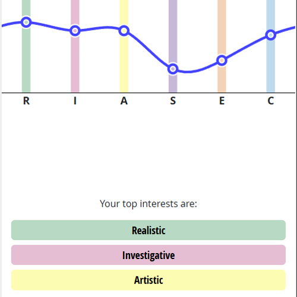
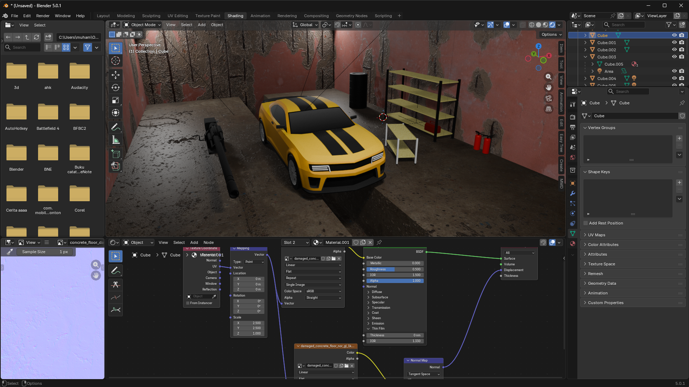
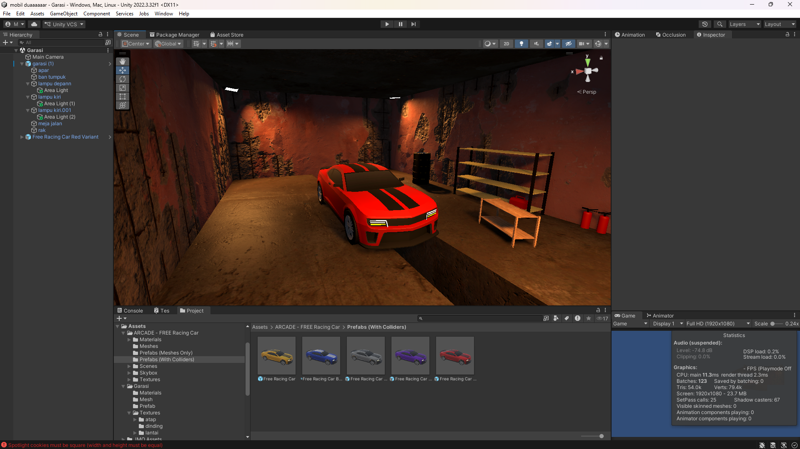
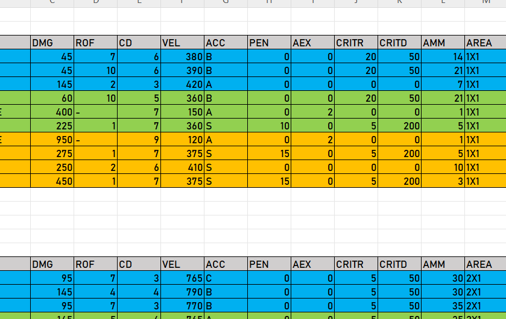
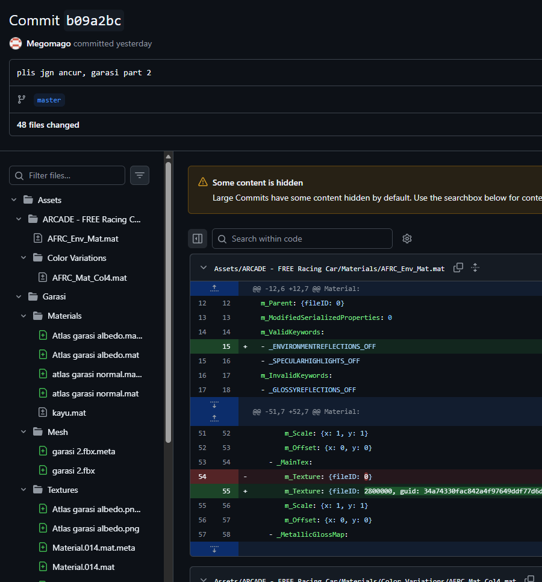

Visi & Misi

Visi
Membuat game yang sangat konsisten secara logika internal — setiap sistem, mekanik, dan item mengikuti aturan yang sama tanpa pengecualian demi kenyamanan pemain semata.
Misi
Membangun game sendiri secara solo indie, dari systems design hingga implementasi teknis, dengan portofolio yang dipublikasikan lewat GitHub.
Kode Etik Desain
- Tidak mengubah logika game hanya demi kemudahan pemain
- Berkomitmen tidak memanipulasi pemain untuk in-game purchase
"Senjata 10kg & senjata 1kg tidak boleh punya mobility yang sama — karena logika fiksi pun harus konsisten dalam dirinya sendiri."
Profil Kepribadian
R–I–A
Top RIASEC
3+
Tahun roadmap
Solo
Mode dev
Mengapa R–I–A cocok untuk saya sebagai game designer?
Realistic → Saya nyaman membangun sistem nyata, bukan sekadar merancang di atas kertas.
Investigative → Saya mencari kenapa sesuatu bekerja — kunci untuk balance testing dan menemukan edge case.
Artistic → Saya merasakan kapan sistem "terasa benar", bukan cuma angkanya benar.

SWOT Analysis

Strength
- Logika & berpikir analitis tinggi
- Konsistensi & integritas dalam desain
- Tenang di bawah tekanan
- Ambisi kuat & bertanggung jawab
Weakness
- EQ rendah, sulit koneksi emosional
- Perfeksionis — rawan scope creep
- Kurang self-branding & dokumentasi formal
- Analisis pemain masih subjektif
Opportunity
- Punya perangkat & waktu belajar
- GitHub sebagai portofolio publik
- Komunitas IGDX aktif di Indonesia
- Niche "logic-consistent game" belum ramai di pasar indie lokal
Threat
- Solo dev — tidak ada safety net tim
- Perfeksionisme bisa block progress
- Tren pasar berubah cepat
- Psikologi pemain sulit diprediksi tanpa data nyata
Gap Analysis


| Aspek | Kondisi Sekarang | Standar Target | Gap |
|---|---|---|---|
| Logika & Mekanik |
Paham logika dasar; masih pakai nilai statis | Sistem dinamis dengan matematika balancing | Nilai statis → formula |
| Teknis (Scripting) |
4–5 objek sederhana, script dibantu AI | Buat 1 modul core loop mandiri di Unity/C# | Ketergantungan AI |
| Dokumentasi (GDD) |
Catatan kasar, ide di kepala | GDD terstruktur & bisa dibaca tim teknis | Format informal |
| Psikologi Pemain |
Berdasar preferensi pribadi | Menguasai Bartle Taxonomy & Flow Theory | Bias subjektif |
Roadmap Pengembangan
Gantt Chart Berbasis Kalender
Semester 1–2 · Sekarang
Fondasi: Spreadsheet & GDD
- →Buat tabel balancing TTK & weapon stats di ExcelMembuat purwapura sendiri dengan referensi dunia nyata
- →1 Reverse Design Document dari game yang dimainkanBedah sistem War Thunder, tulis ulang GDD-nya formal
- →Publish ke GitHub sebagai portofolio pertama/gdd-analysis dan /balance-sheet — bisa diakses publik

Tahun 1 · Unity + C# Dasar
Implementasi Teknis Pertama
- →Unity Visual Scripting → transisi ke C# dasarGoal: sistem pick-up, drop, dan stat modifier yang konsisten
- →Pelajari Bartle Taxonomy & Flow TheoryTerapkan langsung ke sistem yang sedang dibangun
- →Rilis prototipe mini (1 mekanik utama) di GitHubREADME = GDD mini: deskripsi sistem, aturan, variabel
Tahun 2 · Proyek Solo Pertama
Game Solo Pertama yang Bisa Dimainkan
- →Selesaikan 1 game kecil logic-consistentScope: roguelike/puzzle/tactics, 10–20 item berbalancing formula
- →Publish di GitHub + itch.io (free)Portofolio publik — bisa diakses tanpa promosi aktif
- →Share analisis desain di LinkedInPost keputusan desain → personal branding organik

Tahun 3 · Ekosistem IGDX
Masuk Komunitas & Akumulasi Portofolio
- →Join IGDX DiscordShare karya & analisis desain — tidak perlu sosialisasi berat
- →Akumulasi 3+ dokumen analisis desain di GitHub/LinkedInProfil "terbukti" bukan sekadar klaim
Skill Stack & Tools


Hard Skill · Prioritas Utama
Soft Skill · Perlu Dikembangkan
Skill Pembeda

Systems Design & Mathematical Balancing
Berbeda dari desainer yang sekadar mengandalkan "feeling" atau intuisi, saya merancang mekanik, ekonomi, dan keseimbangan sistem (balancing) game menggunakan pendekatan logika matematika yang ketat di atas Spreadsheet. Visi hyper-logical consistency ini membedakan saya dan membuat saya sangat siap menangani game dengan mekanik kompleks.
Pendekatan Reflektif (Donald Schön)
Reflection-in-Action
Saat proses berlangsung
Selama playtesting, langsung evaluasi jika mekanik terasa tidak logis atau membosankan — ubah variabelnya saat itu juga, bukan menunggu proyek selesai.
Reflection-on-Action
Setelah proyek selesai
Audit dokumen & sistem yang sudah dibuat: "Apa yang bisa lebih efisien?" dan "Apakah logika desain sudah benar-benar konsisten dari awal sampai akhir?"
Fokus & Eksekusi Saat Ini
Tindakan Nyata Mengatasi Gap & Weakness
1. Melatih Soft Skill & Komunikasi (EQ)
Sadar bahwa kelemahan saya adalah "Kaku saat berbicara", saat ini saya rutin berlatih pitching presentasi GDD. Saya mulai dari mempresentasikannya ke teman-teman terdekat, dengan target memimpin diskusi kecil di komunitas Discord IGDX.
2. Menguasai Version Control (Git/GitHub)
Agar siap untuk kolaborasi tim di Game Jam, saya belajar manajemen branch dan cara menangani merge conflict pada *Scene* Unity. Tidak ada lagi kekacauan file karena kesalahan teknis.
3. Variasi Portofolio Spesifik Genre
Saya menargetkan pembuatan Reverse Design Document tiap semester dengan fokus genre yang berbeda. Semester ini fokus ke mekanik Shooter, dan selanjutnya mekanik RPG untuk melatih kalkulasi spreadsheet balancing saya.
4. Melakukan External Playtesting
Untuk mematahkan subjektivitas desain saya sendiri, saya merilis purwarupa di itch.io dan memantau 5-10 orang yang memainkannya secara langsung (menerapkan Reflection-in-Action).
5. Standar GDD Berbahasa Inggris
Mempersiapkan diri menuju standar industri dan audiens portofolio global dengan menulis setidaknya sebagian dokumen desain saya secara penuh dalam Bahasa Inggris.

